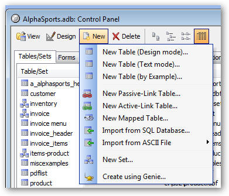
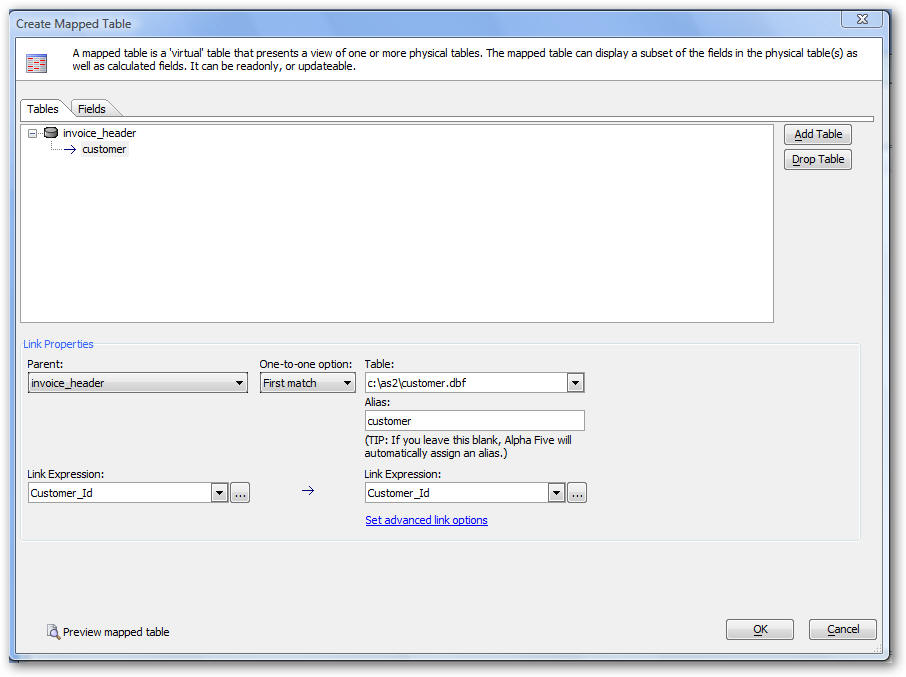
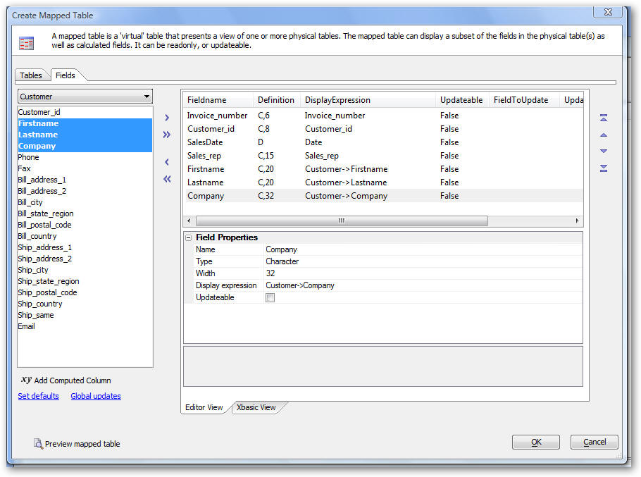
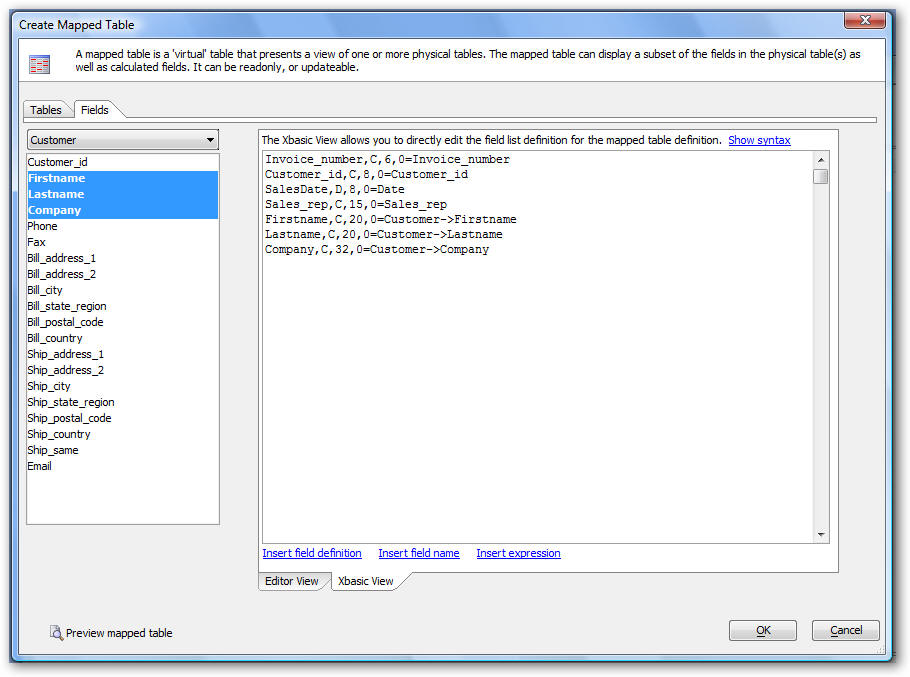
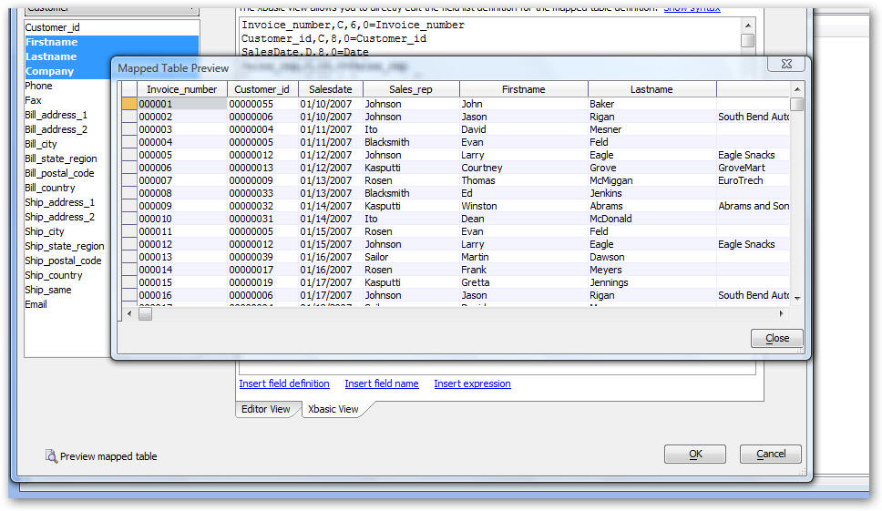

Mapped Tables
Alpha Five now allows you to create 'mapped' tables. A mapped table is a virtual table that displays data from one or more physical tables. The mapped table can include all, or a subset of, the field fields in the physical tables that it maps. It can also include calculated columns. Once you have created a mapped table, it appears in the Tables tab of the Control Panel just like any other table. You can create Forms, Reports, Labels, Letters and Operations for mapped tables just as you would for physical tables. Mapped tables can be read-only, or updateable, depending on how they are defined.
Here are some ways in which a mapped table can be used:
- You want to define an Export Operation and include a calculation in your export definition. For example, your table has a Quantity and Price field, and you want to export these fields, as well as a Total field (Quantity * Price). The Export Operation builder does not allow you to define calculations. To solve this problem, you create a mapped table that has the Quantity, and Price fields, as well as a new calculated field called Total. You can then define your Export Operation on this new mapped table.
- You want to include data from multiple tables in a Table Lookup Field Rule. The Field Rule editor only allows you to select Tables (not Sets) as the data source for a Lookup Field Rule. To solve this problem, you define a mapped table that joins all of the tables that you would like to use in the Lookup Field Rule, and then when you define the Field Rule, you specify the mapped table as the lookup data source.
- You have a complicated Xbasic script that operates against a certain table. Your script makes certain assumptions about the fieldnames in the table. You would like to run this script against another table that has the same fields, but with different names. To solve this problem, you create an updateable mapped table that makes the table 'look' as if it has the same structure as the original table that your script was designed to operate against. You then run your script against the mapped table.
To create a new Mapped Table, either right click on white space in the Control Panel when the Tables/Sets tab is active, or click on the New button and select 'New Mapped Table...' from the menu.

The 'Mapped Table' editor is displayed as shown below (showing the definition for a Mapped table that displays information from the invoice_header and customer tables).
This dialog has two tabs. The 'Tables' tab allows you to select which tables are included in the mapped table. You can select one or more tables. For each table, other than the first table, you must specify how that table is related to its parent.

Note that all joins in Mapped tables are one-to-one. In the event that a parent record is related to multiple child records, you can select if the match is the first matching record, last matching record or closest matching record.
The 'Fields' tab allows you to select the fields, and calculated fields, that appear in the mapped table.
You can select fields from the 'Available Fields' list on the left and then click the Select button. You can also select fields by double clicking them.
Once a field has been selected, you can edit its display expression. For example, say you wanted a single field called 'fullname', rather than two fields (firstname and lastname). You could select the 'firstname' field and then edit the properties of this field, changing its name from 'firstname' to 'fullname' and its display expression to: alltrim(customer->firstname) + " " + alltrim(customer->lastname).
The 'Fields' tab has two views, The 'Editor View' is shown below. This view allows you to edit the field list in the Mapped table using the guided builder. The 'Xbasic View' (shown in the subsequent screenshot), allows you to edit the field list in a freeform manner.

The Xbasic View shows a text area in which you can edit the field list for the mapped table. To see the syntax for the Xbasic View, click the 'Show syntax' hyperlink.

The Mapped Table definition shown above is read-only because it only defines how data is mapped from the source tables to the mapped table. In order to make any field in the mapped table updatable, you have to also define the reverse map, which specifies how data is mapped from the mapped table back to the source tables. If a mapped table joins multiple tables, only the fields in the primary table are updateable.
For example, the Mapped Table definition above has a field called 'SalesDate' with a display expression of 'Date'.
To make this an updateable field, the definition would be changed as follows:
SalesDate,D,8,0=Date
Date=SalesDate
This definition is interpreted as follows:
- The mapped table has a field called 'SalesDate'. This field is populated with the 'Date' field from the Invoice_header table (because the display expression is not qualified with a table alias, the expression is assumed to refer to fields in the primary table of the Mapped table definition)
- When edits are made to the 'SalesDate' field in the Mapped Table, the changes are written back to the 'Date' field in the Invoice_header table.
Any changes that you make while editing in the 'Xbasic View' are parsed when you switch back to the 'Editor View' and the builder is updated to reflect your changes.
At any time while editing the Mapped Table, you can click the 'Preview mapped table' button to see how your table will look.

Once you have saved your Mapped Table, you can always go back and edit its definition.
To edit a previously created Mapped Table, right click on the table in the Control Panel and select Mapped Table, Edit Mapped Table Definition from the menu. The Mapped Table builder will be reopened.
Watch a video demonstration of this feature.